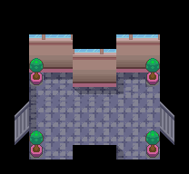

040 穿玩偶装的人
一句话目标：查清周四夜晚在桐树林出现的粉色玩偶装之人，并回报过道里的男子。
接取地点
- 桧皮镇 通往桐树林的过道（地图 44:5） (7,9) 的男子（local_id 4）。该过道的传送可通往桐树林（地图 1:121）。
准备条件
- 需推进主线，使入口判断旗标 4246 置位（未置位时他只说“森林里那个身影……无论如何都很令人在意啊。”）。
- 需在周四夜晚前往桐树林。
操作步骤
- 与过道 (7,9) 的男子对话。他讲述周四晚上在桐树林遇到一个穿粉色玩偶装的人，对方抱住他并把他送出桐树林后消失，他请你调查玩偶装里的人到底长什么样。选择“是”后出现“接受任务:<穿玩偶服的人?>”，他补充“我是在周四遇见他的”。
- 在周四夜晚前往桐树林（1:121），找到并调查玩偶装的人（具体触发场景不在本包内）。
- 查明真相后回过道找男子报告。他得知“原来那是一只宝可梦”，向你道谢并给报酬，任务完成。
交付检查
- 需先完成桐树林的调查（中间旗标 6286 置位）再回报；未完成时他只会问“调查得怎么样了？有看到玩偶服下的面孔吗？”。
奖励
- 部位护具（717）×1
- 3 BracerPoints + 4000$
容易卡住的位置
- 入口旗标 4246 未置位时不给任务。
- 调查限周四夜晚，需到桐树林（1:121）。
- 玩偶装里的宝可梦为“穿着熊”（回报后对白提及）；回报完成后他还会提到“部位护具”能派上用场。
来源与待补
- 包：
data/quest_packets/040.json；入口0x08F50AEC/0x08F347BD；接取0x08F343FB；回报完成0x08F34450。 - 相关宝可梦：穿着熊（由对白）；相关道具：部位护具。
- 未定位：桐树林 (1:121) 触发玩偶装现身/把人抱走的场景脚本，以及中间旗标 6286、6288 的来源不在本包内；旗标 4246 的剧情来源。
地点地图
共享RGB底图；点击可缩放定位。数字对应本页相关地点，不代表地图上全部事件。
桧皮镇

1 穿玩偶装的人（7,9） 底图有6个图块缺少原始数据。
桐树林


地图范围记录：当前资料没有精确人物／遭遇坐标。